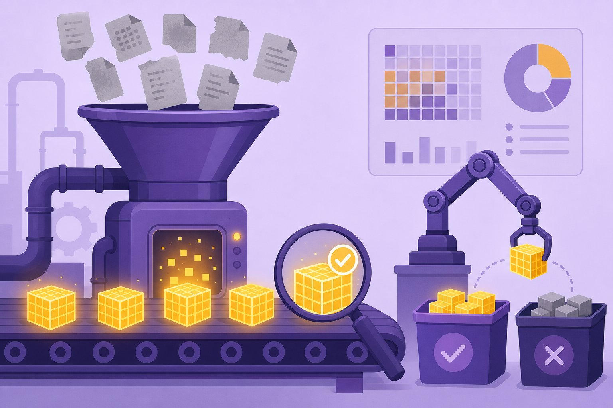

Synthetic data & distillation
Human data is finite; model appetite is not. Synthetic data and distillation stretch every real example into thousands — but garbage in, gospel out. Learn the flywheel, the verification ladder, and how to spot model collapse before it eats your pipeline.

Figure 64.1 — Synthetic data is a refinery, not a photocopier: most output gets rejected, and that’s the point.
1. The flywheel (generate → verify → train)
- Distillation: a big teacher labels/answers at scale; a small student trains on it — cheaper inference, same task shape (Ch 50).
- Self-instruct / evol-instruct: seed prompts → model writes harder variants → filter → repeat. Breadth comes from the seed pool, not the loop.
- Verification ladder: deterministic checks (code runs, math matches, schema valid) first; model-judges second; human spot audits last (Ch 61).
2. Failure modes (the wall of “more data!”)
| Failure | Symptom | Fix |
|---|---|---|
| Model collapse | Tails vanish; outputs converge to the bland mean over generations | Keep real data in every mix; cap synthetic share; reseed |
| Error amplification | Teacher’s blind spots become student’s gospel | Verify with independent checks, not the same teacher |
| Style over substance | Fluent, confident, wrong — judges reward polish | Ground evals in execution/outcomes, not vibes |
| Leakage | Eval examples (or paraphrases) slip into training | Dedup against evals; quarantine benchmarks (Ch 66) |
3. Licensing & honesty (read this twice)
- Teacher terms matter: many model licences restrict using outputs to train competitors. Read the terms; log provenance per row.
- Disclose synthetic share: evals, papers, and buyers deserve the real-data/synthetic split. Hidden mixes rot trust and science.
- Consent chains: synthetic paraphrases of private data are still derived from private data — same obligations (Ch 54, Ch 66).
Collapse watch
Training generation N+1 purely on generation N’s outputs narrows the distribution: rare words, rare cases, and minority patterns die first. If your diversity metrics (distinct n-grams, tail-case accuracy) drift down while average loss looks fine, stop the flywheel and reseed with real data.
Short notes
Flywheel: human seeds → big-model generation → verification ladder (deterministic, judges, audits) → small-model training → eval on held-out real data. Distillation buys cheap inference. Dangers: collapse, error amplification, style-bias, leakage. Respect teacher licences, disclose synthetic share, track provenance.
Point notes
- Seeds anchor, verify everything.
- Execution beats judge vibes.
- Real data in every mix.
- Dedup against evals.
- Log provenance + licences.
MCQs
5 questions1. Knowledge distillation trains a small model on:
2. First rung of the verification ladder should be:
3. Model collapse means:
4. Using the SAME teacher as verifier and generator risks:
5. Before training on another model’s outputs, you must check:
Practice questions
P1. Design a synthetic pipeline for Hindi customer-support answers: seeds, generation, verification, eval.
Seeds: 500 human-verified Q-A pairs covering top intents + edge cases. Generation: teacher writes paraphrases + harder follow-ups (evol-instruct), 20× volume. Verification: (1) deterministic — answer cites a real help-article span (else reject), (2) judge panel scores groundedness, (3) 2% human audit weekly. Eval: held-out real tickets scored by resolution rate + human preference; track tail-intent accuracy for collapse.
P2. Your distilled student matches the teacher on the leaderboard but fails real users. Diagnose.
Likely leakage (eval paraphrases in the synthetic mix) + style-over-substance (judge rewarded fluency). Check: dedup train vs eval with fuzzy matching; re-eval on fresh real data with outcome metrics (task success, not preference); inspect tail slices. Fix: quarantine evals, add execution-grounded checks, reseed with real user queries.
P3. Diversity metrics are drifting down across flywheel generations while loss looks fine. What do you do?
Classic early collapse. Pause the loop; raise the real-data share (or freeze synthetic ratio below a cap, e.g. ≤50%); reseed tails explicitly (rare intents, dialects, long inputs); add diversity gates (distinct n-grams, tail accuracy must not regress) alongside loss before any release. Document the synthetic share honestly.